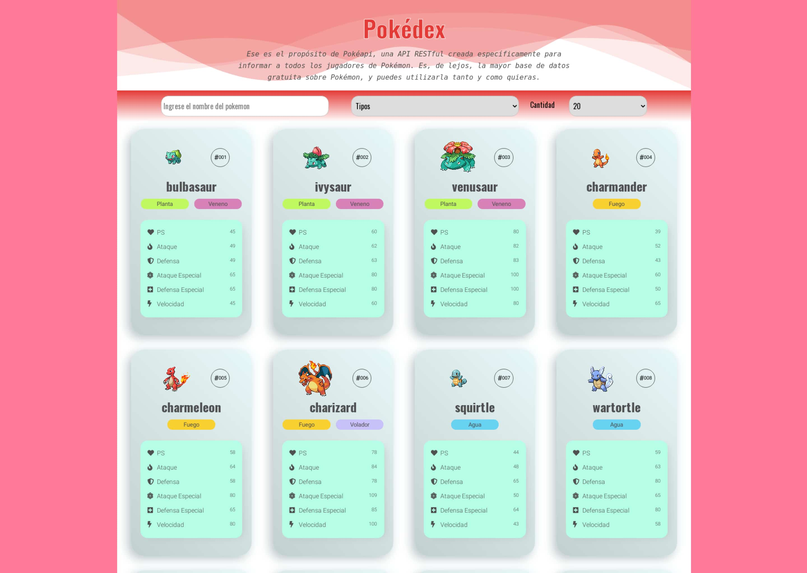
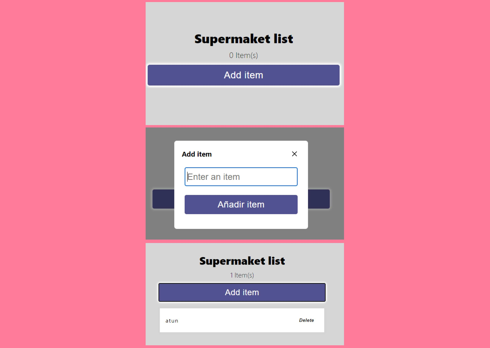
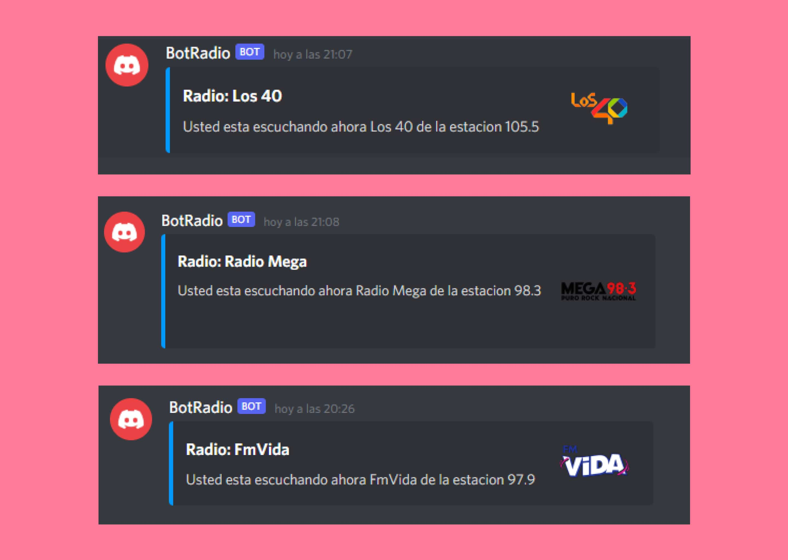
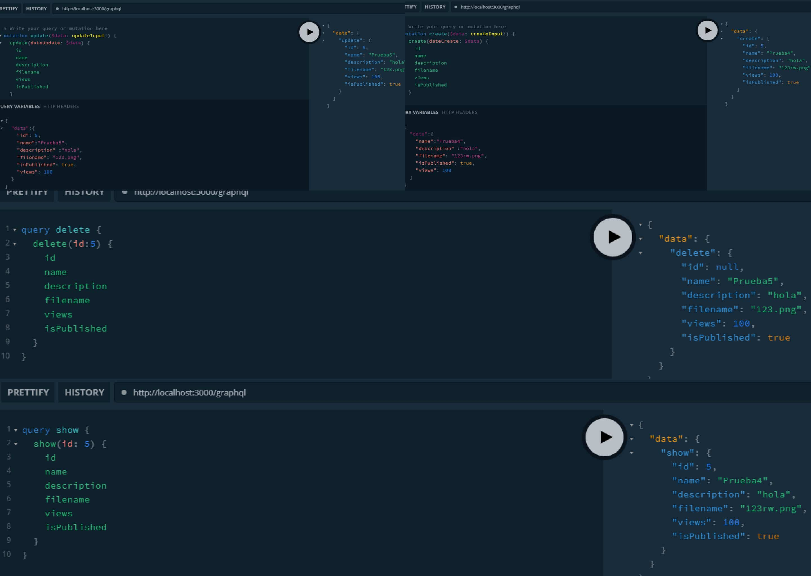

Hola, soy Pablo Bagliere desarrolador web
Desarrollador web con tecnologías tales como React, Node y Typescript. En constante aprendizaje de las tecnológicas web que se usen en la actualidad.
Descargar CVProyectos




